Keys to Special Places
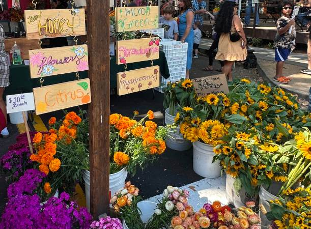
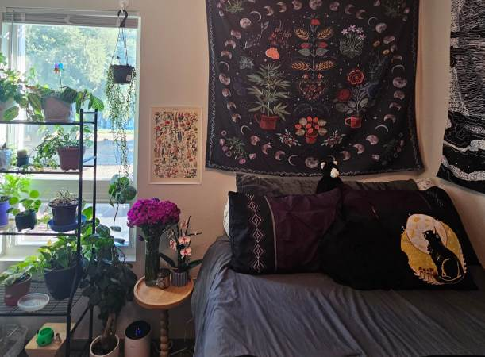
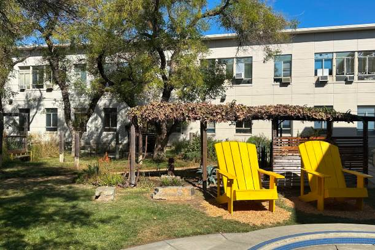

These keys represent the places that shaped me and the memories attached to them. Whenever I see them, I think about where I’ve been and the different versions of myself connected to those spaces. The lake house photos are from the home where I grew up and spent most of my childhood, while the bedroom photo represents my new apartment and the new memories I’m creating there now. Even though they’re just keys, they remind me how much places can hold pieces of our lives.
Crochet Plant
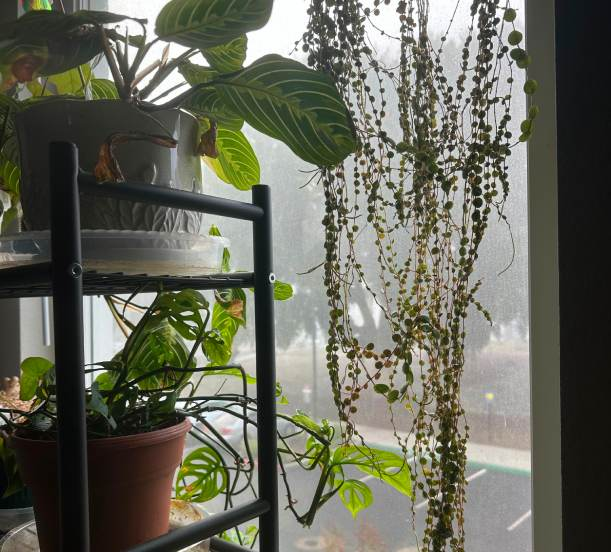

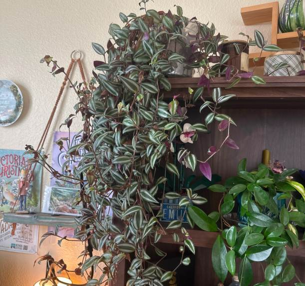
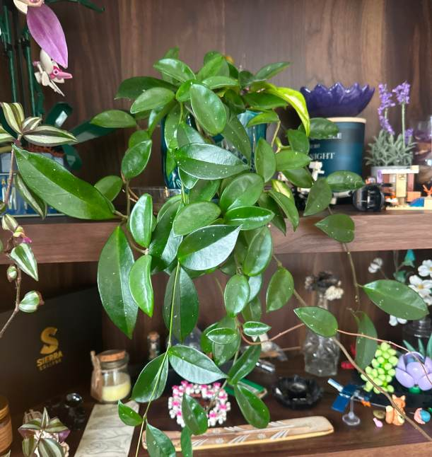

My Lego plants remind me not only of how much I love building things, but also of my deep love for nature and my real plants. Every single one of my plants has a name (obviously), and even though they may just seem like normal houseplants, caring for them has become a really grounding part of my life. Taking time every week to water them and care for them gives me a moment to slow down and reflect when life feels hectic or overwhelming. Over the years, many of them have been gifts from people I love, so they also remind me that I’m cared for too, and that I deserve to take care of myself in the same way.
Concert Wristbands
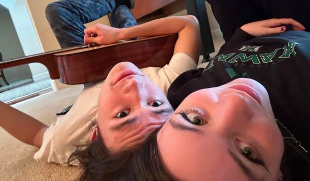

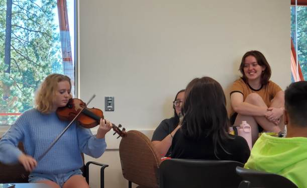


Even though these wristbands are from the most recent concert I went to, they represent something much bigger to me than just concerts. Music has always been something that brings the people I love together, and so many important memories in my life are connected to it. Whether it’s family playing instruments, friends sharing music, or late-night drives with songs attached to specific memories, music has become deeply tied to the people I care about most. I definitely consider myself a concert junkie, but these memories remind me that music means far more to me than just entertainment.
Two Shells
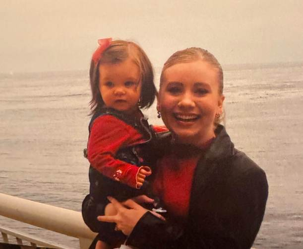
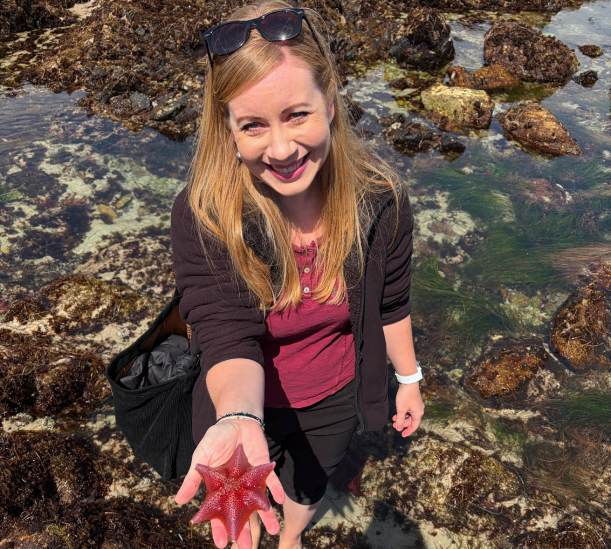


I originally picked up these shells during a beach trip I took with my family, but over time they’ve become reminders of my mom more than anything else. My mom is genuinely like if the beach became a person. Some of my favorite memories with her are tied to traveling, exploring ocean life together, and spending entire days near the water. From her putting sunscreen on my face while I complained the whole time, to finding shells and sea creatures together, she has always made those places feel safe and joyful. These shells remind me not only of traveling, but also of how lucky I am to experience those memories with the people I love most, her especially.
Monthly Polaroids

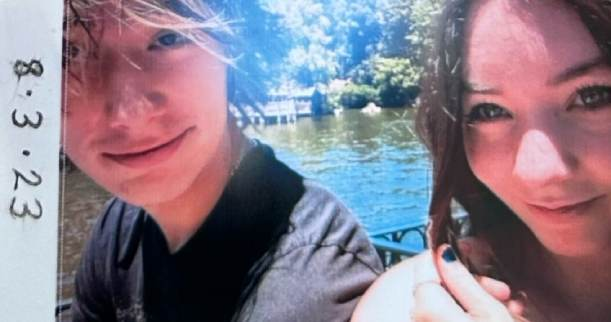


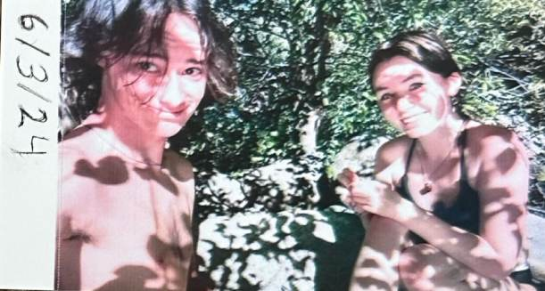
Everyone likes taking photos with the people they love, but these polaroids feel especially important to me. My boyfriend and I started taking a “monthly” photo together when we were about six months into dating, and now over three and a half years later, I have an entire collection documenting our relationship over time. He is genuinely my best friend, and so many of my favorite memories are connected to him. These photos are more than just pictures to me, they remind me constantly of how important it is to appreciate the time we get with the people we love, because none of it is guaranteed. Every month, day, and memory together feels meaningful to me.
Ceramic Cat


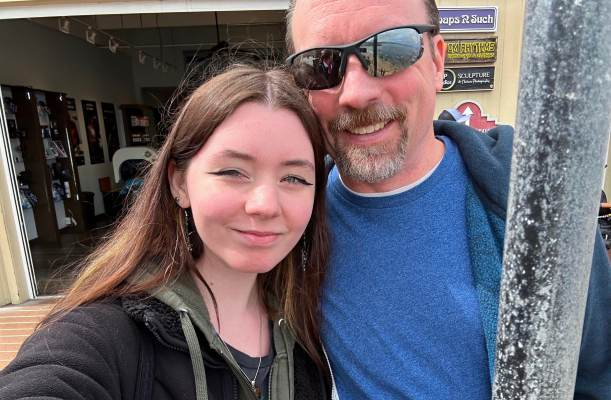
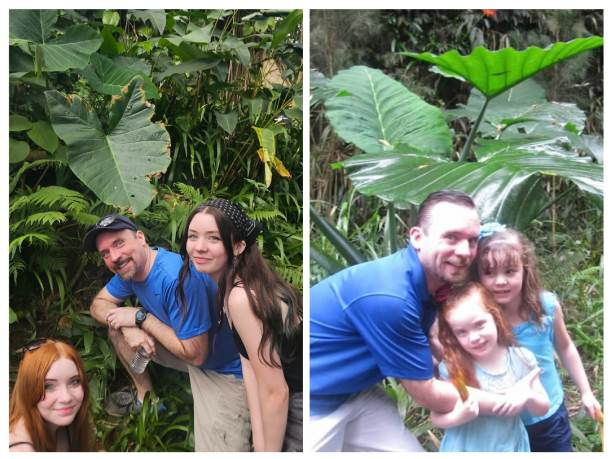
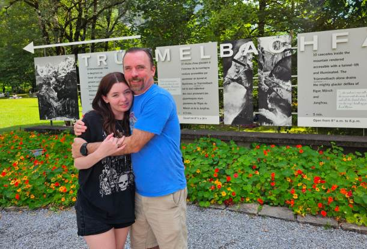
My dad gave me this ceramic cat when I was really little, and together we named it Sprinkles. I genuinely love this tiny cat so much, and even now I still bring it around with me all the time. While it’s a silly little trinket on the surface, it always reminds me of my dad and the comfort he brings into my life. He has always been one of the most patient, kind, and dependable people for me, especially during difficult moments. In a weird way, this cat reminds me of that same feeling, like something small and comforting that’s always there when you need it. It’s a reminder of the kind of care and support I want to give to the people around me too.